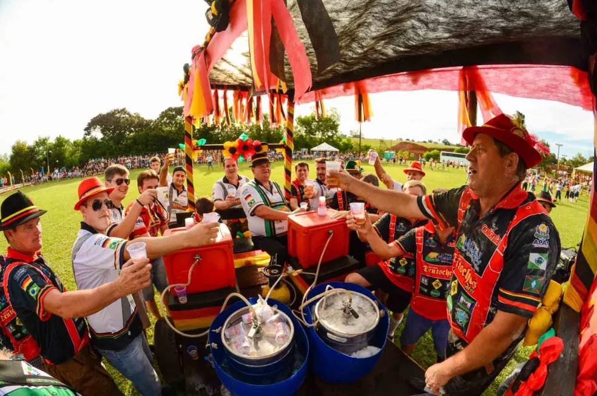
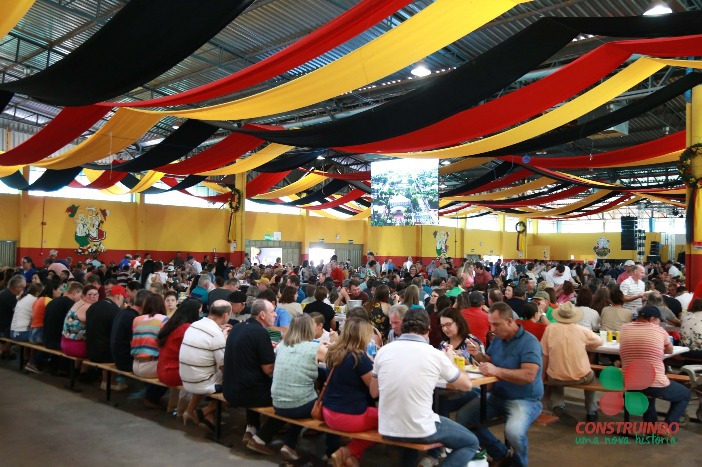
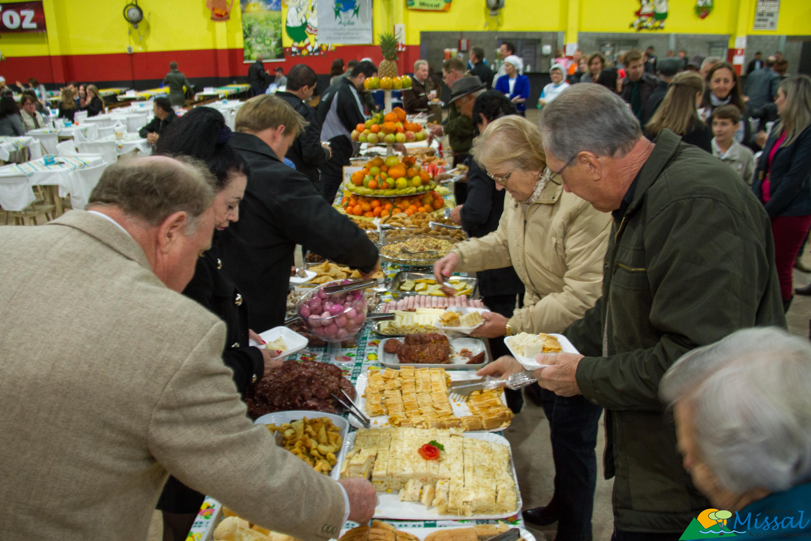
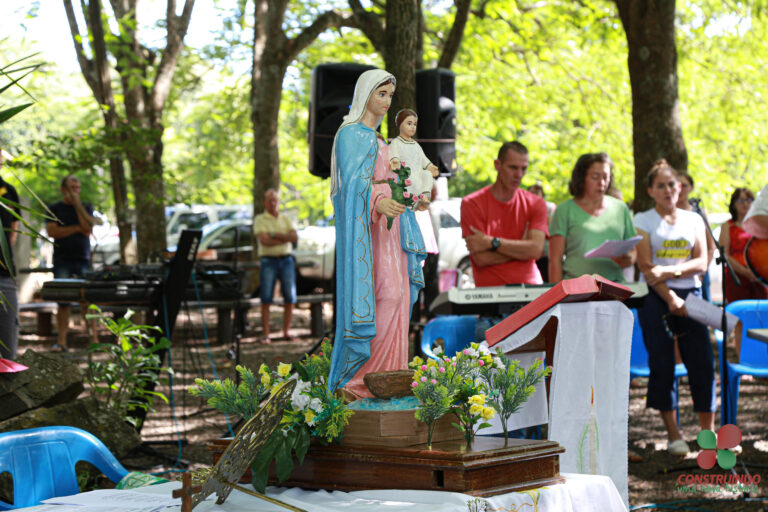

HISTÓRIA
Missal foi fundada em 25 de julho de 1963 e possui uma rica história ligada à colonização e
agricultura. Hoje contendo aproximadamente 11.604 habitantes.
A formação de Missal deu-se a partir do desmembramento do município de Medianeira, na época da fundação o sacerdote ainda rezava a missa em latim e de costas para o povo. (MISSALE ROMANO) O Concílio Vaticano II (1964) aprovou as traduções dos textos litúrgicos, mas conserva uma única e mesma tradição. Entre tamanha diversidade de línguas foi mantida a mesma oração como meio de testemunhar e afirmar a unidade de todos os fiéis.

TURISMO
Conheça os principais pontos turísticos de Missal, como o turismo religioso, que se localiza na comunidade de São Pedro, a escultura do padroeiro da comunidade, posssuindo 4 metros de altura, atraindo turistas, assim como a gruta de São Cristovão. e
tendo como destaque no município a cultura alemã, e a tradicional festa "DEUTSCHES FEST" que atrai pessoas de várias localidades a cidade. A pesca esportiva é um grande evento que acontece durante todo o ano e chama por muitos turistas da região oeste do Paraná, pois já a Prainha de Missal tem atracadouro próprio.

CULTURA
A cidade é conhecida por suas festas e tradições culturais que atraem visitantes de
toda a região. Como:
O CAFÉ COLONIAL, ocorre na metade de junho, aonde são servidos mais de 60 pratos, doces e salgados. O Café Colonial é tradicional e beneficente. O Provopar organiza o café com apoio de grande equipe de voluntários.
A DEUTSCHES FEST, é considera a maior festa típica do Oeste do Paraná. O evento foi criado em 2002 para preservar a cultura e, divulgar as tradições de geração a geração.
O BAILE DO COLONO E DO MOTORISTA, o evento é uma forma de homenagear as pessoas que trabalham no campo ou como motoristas, resgatando a importância das duas profissões para o desenvolvimento de Missal. Realizado no mês de julho, para comemorar a data de fundação do município.
A FESTA DOS NAVEGANTES, realizada anualmente no Terminal Turístico de Vila Natal, no início do mês de fevereiro. A Festa dos Navegantes é alusiva à emancipação de Missal.


